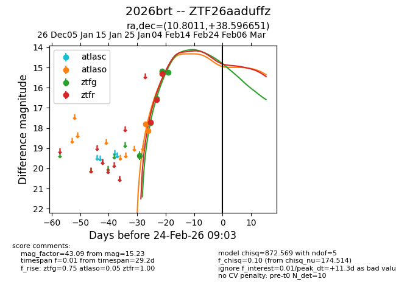
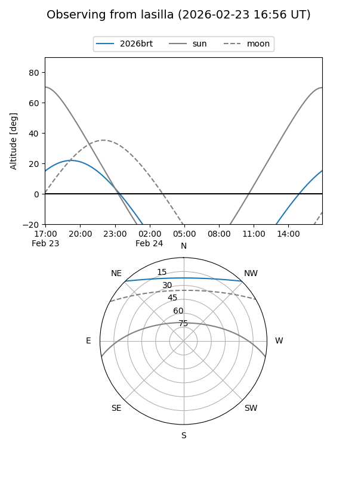
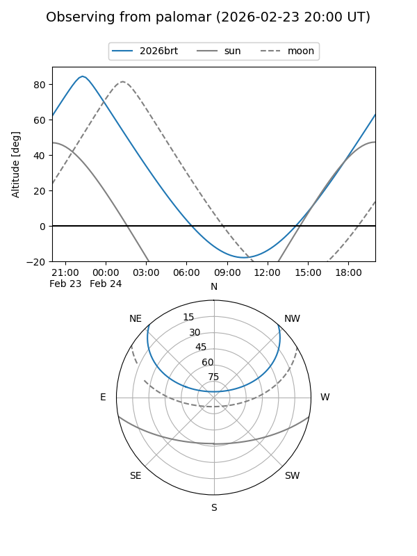
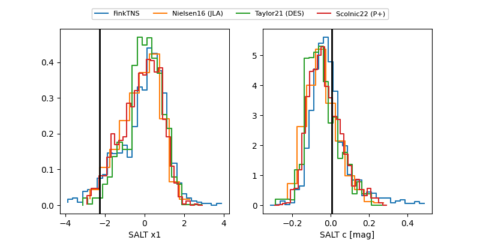

2026brt
Target 2026brt at 2026-02-24 09:08
Aliases and brokers:
FINK: link
Lasair: link
ALeRCE: link
TNS: link
YSE: link
alt names
ZTF26aaduffz (ztf,fink_ztf)
2026brt (tns,yse)
Coordinates:
equatorial (ra, dec) = 10.8011,+38.59665
equatorial (HMS+DMS) = 00:43:12.27,+38:35:47.94
galactic (l, b) = (121.1677,-24.24689)
Flags:
Photometry:
last atlaso=18.15, ztfg=15.23, ztfr=15.31
2 atlaso, 5 ztfg, 3 ztfr detections
Lightcurve

Visibility


Additional plots
